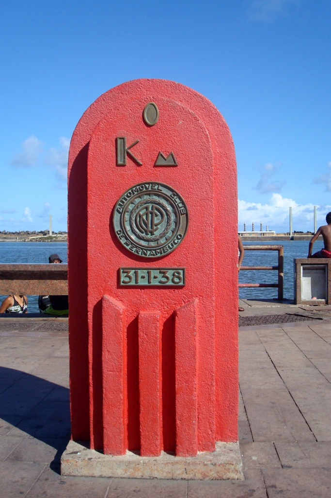
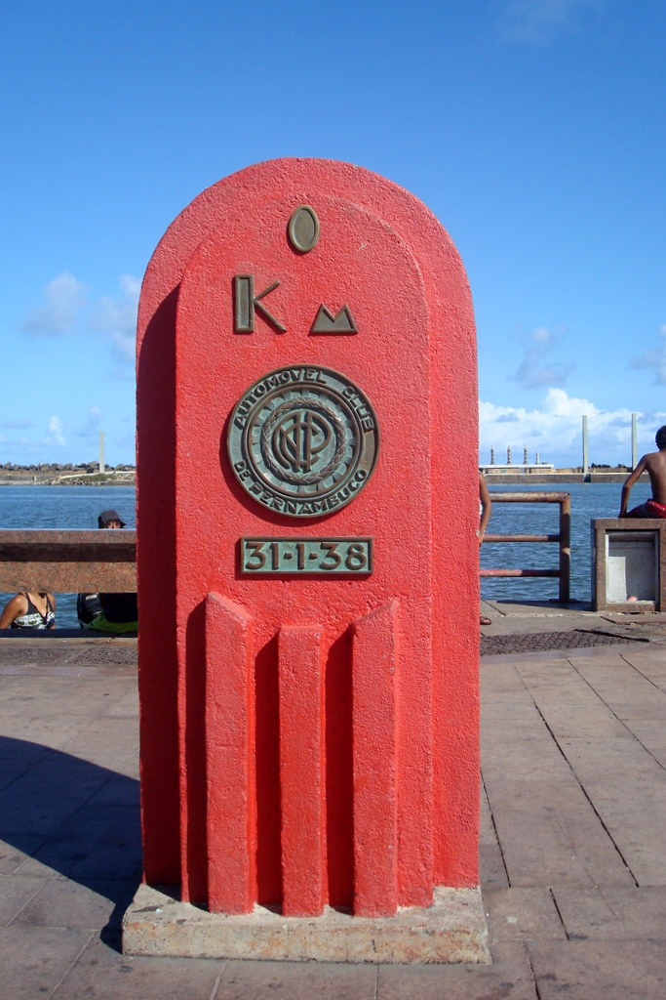

Mas por que Marco Zero?
A praça tem o nome original de Praça Barão do Rio Branco, todavia ficou conhecida como Praça do Marco Zero pelo fato de que nela encontra-se o quilometro zero das estradas de Pernambuco. É formada por um marco de cor vermelha doado pelo Clube do Automóvel. Na lateral da praça encontra-se a estatua do Barão do Rio Branco em bronze, com 2,80m de altura, do escultor Felix Charpentier. Já no centro pode ser vista a rosa dos ventos do pintor Cícero Dias. Nos períodos de momo a praça funciona como quartel general do carnaval multicultural do Recife.

 

Um pouco de história
No início do século passado, o centro do Recife passou por drásticas reformas, com projetos de higienização urbana e melhoramento das condições do Porto do Recife. Na prática, a higienização social se traduziu em desapropriações de pelo menos 480 imóveis que foram demolidos para a abertura das três novas avenidas no Bairro. Em um relato de Mário Sette podemos ter uma descrição do caso:
"Pouco a pouco desaparecia aos olhos não um bairro, mas um cenário de milhares de criaturas no seu presente e no seu passado. [...] e o Corpo Santo também se desmanchava [...] Poucos falariam ainda desse burgo onde Recife nascera, tão enviesado de ruas e ruelas [...] tudo no chão. Nunca se vira uma loucura assim."
Com esta grande reforma, profundas modificações foram feitas no bairro e na praça, como a demolição da Matriz do Corpo Santo e a abertura de novas e largas avenidas. No local onde estava a igreja, está edificado o edifício Maurício de Nassau, de características modernas e fachadas em vidro. Ao seu lado foram construídos os prédios da Associação Comercial de Pernambuco e a Bolsa de Valores. Estes dois prédios apresentam, em sua arquitetura, nítida influência francesa que se caracteriza pela mistura de diversos elementos construtivos, além do armazém 10 e 12 que serviam ao porto do Recife para estoque de açúcar. Estes prédios, hoje, abrigam a sede do Grupo Industrial João Santos, o Santander Cultural, a Associação Comercial de Pernambuco, a Caixa Cultural e o Centro de Artesanato de Pernambuco, considerado o maior do segmento no Brasil. Em 1999 a praça que existia no local recebeu severas modificações. O busto do Barão do Rio Branco e o Marco Zero foram realocados para a borda da praça. A "nova praça" foi projetada pelo pintor Cícero Dias, em 1999. No seu centro se encontra uma enorme obra de arte feita por ele. Inspirado em sua obra Eu vi o mundo e ele começava no Recife, criou um grande circulo com uma Rosa dos Ventos no centro. A obra tem em média 10m de raio. Atualmente serve como ponto de encontro de jovens, desportistas, artistas, turistas e moradores da cidade. Além de ser palco de comemorações e apresentações artísticas.